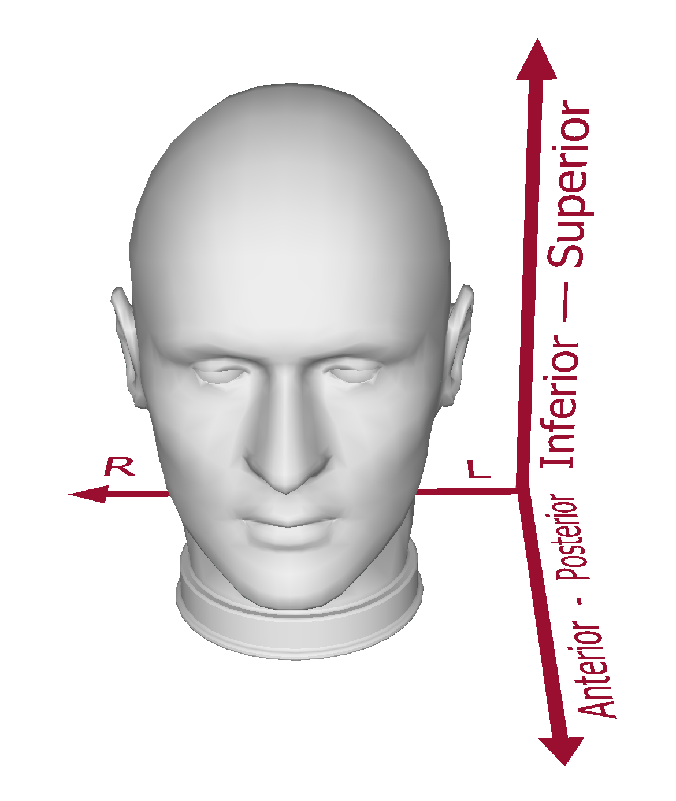

Image Orientation¶
Throughout the Pyneal pipeline, from the output stage of Pyneal Scanner onward, we use the convention of orienting the images to RAS+. This means:
- The 1st axis (x) is oriented from left to right
- The 2nd axis (y) is oriented from posterior to anterior
- The 3rd axis (z) is oriented from inferior to superior
Visually, the RAS+ coordinate system is arranged like:

There are a number of stages throughout the pipeline where this is important to keep in mind:
Building nifti files offline with getSeries.py¶
When you use the getSeries.py tool to build a nifti file from raw images from the scanner, the resulting image will be oriented to RAS+
Output from Pyneal Scanner¶
Pyneal Scanner is designed to accept a variety of inputs from various scanner manufactures and imaging environments. One of Pyneal Scanner's important functions is to take the input data, in whatever form it appears, and convert it to a standardized format before passing each volume along to Pyneal.

Pyneal expects each volume to arrive from Pyneal Scanner in RAS+ orientation.
Creating masks for Pyneal¶
Since Pyneal receives images from Pyneal Scanner that are oriented to RAS+, the mask that Pyneal uses for analysis must also be oriented to RAS+.
(In fact, not only does the mask have to be in RAS+, it also must match the dimensions of the incoming volumes. The easiest way to ensure this is the case is to use the Create Mask tool, which uses an example functional series from the current scan to transform the mask to the correct dimensions and orientation)
Saved output from Pyneal¶
At the conclusion of a real-time run, Pyneal will save the series data as a 4D nifti file in the specified output directory. This output file will be oriented to RAS+.
See also:¶
For helpful guides on understanding image orientation, and using affine transformations, see: